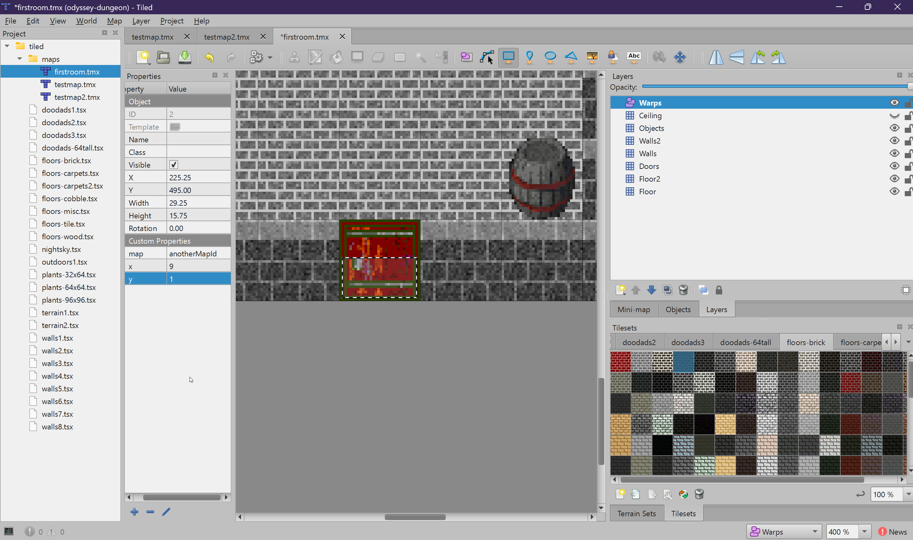
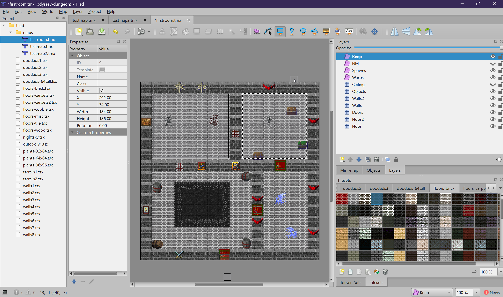
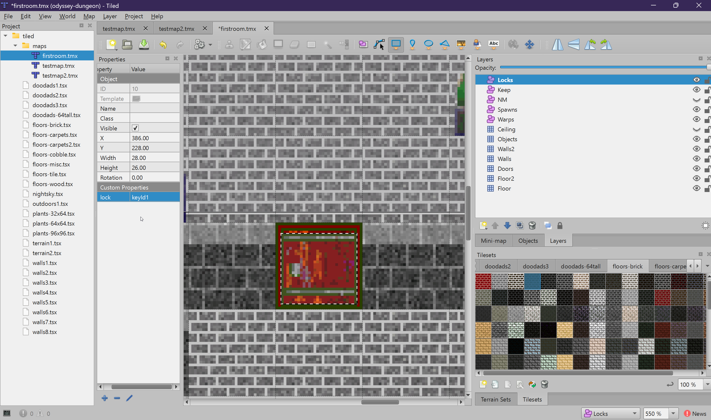
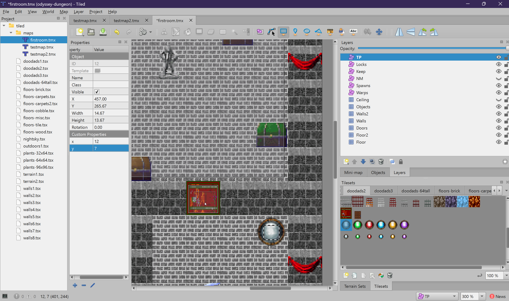
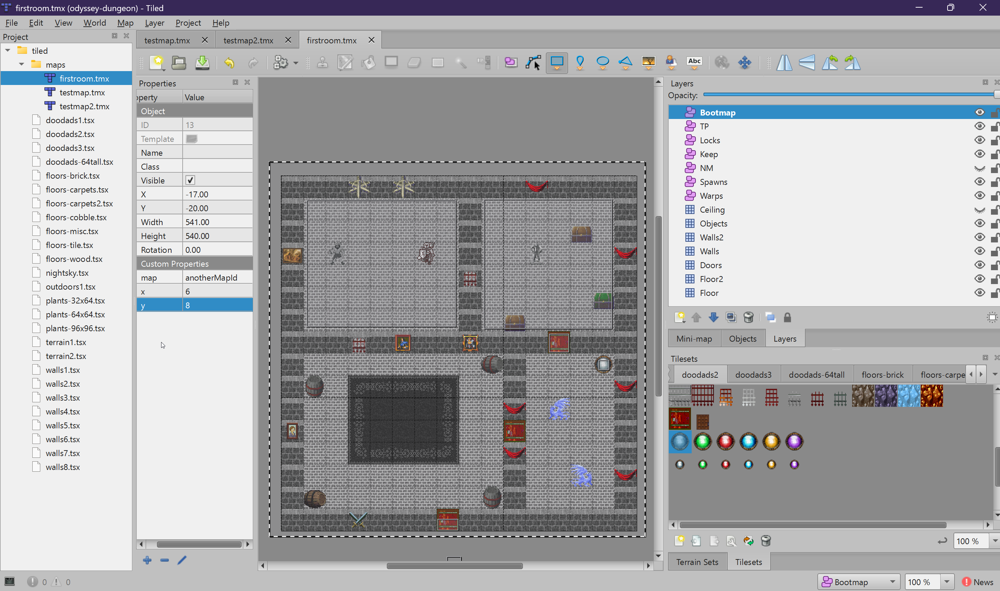
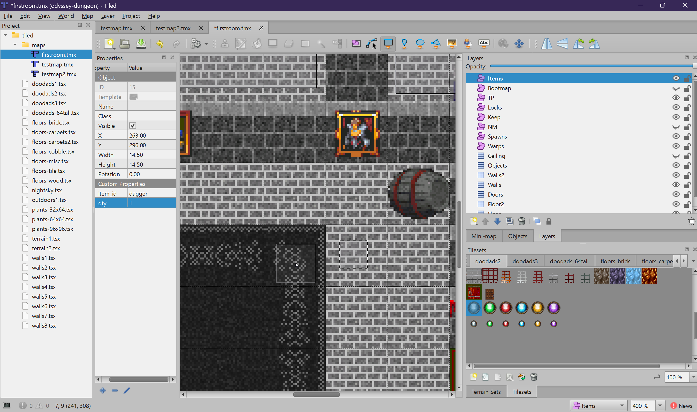

Object Layers
Object layers define invisible game logic zones — warps, spawns, locks, and more.
Unlike tile layers (which create visible geometry), object layers define invisible zones that control game behavior. You draw rectangles on these layers and set custom properties to tell the engine what should happen when a player enters the zone.
How to Draw Objects
- Select the object layer in the Layers panel
- Choose the Insert Rectangle tool from the toolbar (or press
R) - Click and drag on the map to draw a rectangle
- With the rectangle selected, set its custom properties in the Properties panel
Warps
Warp zones teleport players to another map (or another location on the same map) when they walk into the zone. This is how you connect maps together — dungeon entrances, town gates, stairways, etc.
Properties
| Property | Type | Required | Description |
|---|---|---|---|
map |
string | Yes | Target map ID (the filename without .tmx). Example: dark-cavern |
x |
int | Yes | Target X tile coordinate on the destination map (as it appears in Tiled) |
y |
int | Yes | Target Y tile coordinate on the destination map (as it appears in Tiled) |
dir |
int | No | Degrees to add to the player's facing direction upon arrival. Example: 180 to turn them around. |
Example
To create a warp from an outdoor map to a dungeon entrance:
- Draw a rectangle across the dungeon entrance doorway on the
Warpslayer - Set
mapto the dungeon's map ID (e.g.,dark-cavern) - Set
xandyto the tile position where the player should appear in the dungeon - Optionally set
dirto180so the player faces away from the entrance
x and y values use the same coordinate system you see in Tiled.
If you want the player to appear at tile column 5, row 10 on the target map, set x=5 and y=10.

Spawns
Spawn zones define areas where monsters appear. Each spawn zone produces a specific type of monster at a configurable rate.
Properties
| Property | Type | Required | Description |
|---|---|---|---|
SPAWN_ID |
string | Yes | The monster type ID from the database. This must match an existing monster definition. |
SPAWN_COUNT |
int | No | Maximum number of monsters alive at once from this spawner. Default: 1 |
SPAWN_DELAY |
int | No | Seconds between respawns after a monster is killed. Default: 5 |
How Spawning Works
- Monsters spawn at random positions within the rectangle
- The spawner keeps
SPAWN_COUNTmonsters alive at all times - When a monster dies, a new one spawns after
SPAWN_DELAYseconds (with ±20% randomness) - Monsters roam within and around their spawn area
- If the map has no players for 5+ seconds, spawning and monster updates pause for performance

NM (No Monster)
No-Monster zones prevent monsters from entering an area. Monsters cannot pathfind into or through these zones. Use them to create safe areas around town NPCs, shop entrances, respawn points, or any area that should be free of monsters.
Properties
None. Simply draw rectangles over the areas you want to protect. No custom properties are needed.
Tips
- Make NM zones slightly larger than the area you want to protect for a comfortable buffer
- If a monster's spawn area overlaps an NM zone, it will still try to spawn but cannot move into the NM zone
- Players can still be attacked by monsters outside the NM zone if they are close to the edge
Keep
Keep zones define guild-owned safe areas. They function like NM zones (monsters cannot enter), but are specifically intended for guild halls and keeps. The engine uses Keep zones to identify the guild's protected territory.
Properties
None. Draw rectangles over the guild's safe area.

Locks
Lock zones mark doors within the covered area as locked. Locked doors do not open automatically when a player walks near them. Instead, they require a specific condition to unlock (a key item, guild membership, or a touchplate).
Properties
| Property | Type | Required | Description |
|---|---|---|---|
lock |
string | Yes | Lock identifier. See lock types below. |
Lock Types
| Lock Value | Behavior |
|---|---|
"guild" |
Opens for any member of the guild that owns this map's keep |
"guildmember" |
Opens for guild members with rank Member or higher |
| Any other string | Requires a key item with a matching lock ID to open |
How to Use
- First, place door tiles on the
Doorslayer - Create a
Locksobject layer - Draw a rectangle that covers the door tile(s) you want to lock
- Set the
lockproperty on the rectangle
Locked doors can be opened temporarily by Touchplates, or permanently (for the duration) by guild access or key items. When unlocked by a touchplate or key, the door opens for 5 seconds before closing and locking again.

TP (Touchplates)
Touchplate zones are pressure plates. When a player walks into the zone, a specific locked door elsewhere on the map opens for 5 seconds. The door stays open as long as a player is standing on the touchplate, and closes 5 seconds after they step off.
Properties
| Property | Type | Required | Description |
|---|---|---|---|
x |
int | Yes | Tiled X coordinate (column) of the target door |
y |
int | Yes | Tiled Y coordinate (row) of the target door |
How to Use
- Place a door tile on the
Doorslayer - Lock the door using the
Lockslayer (so it does not open by proximity) - Create a
TPobject layer - Draw a rectangle where you want the pressure plate to be
- Set
xandyto the tile coordinates of the locked door (hover over the door tile in Tiled to see its coordinates in the status bar)
x and y properties use Tiled's coordinate system (the same
column and row numbers you see when you hover over a tile in the editor). The engine
automatically handles the coordinate conversion internally.

Bootmap
Bootmap zones handle player logout relocation. If a player logs out (or disconnects) while standing inside a bootmap zone, their saved position is changed to the specified target location. When they log back in, they appear at the target — not where they logged out.
This is useful for instanced or temporary areas like dungeon boss rooms, event arenas, or any area where players should not be able to log in directly.
Properties
| Property | Type | Required | Description |
|---|---|---|---|
map |
string | Yes | Target map ID where the player should appear on next login |
x |
int | Yes | Target X tile coordinate |
y |
int | Yes | Target Y tile coordinate |

Items
The Items layer defines static item spawns — items that appear on the ground when the map loads. Players can pick them up, and they respawn after all players leave the map (with a 2-minute delay).
Properties
| Property | Type | Required | Description |
|---|---|---|---|
item_id |
string | Yes | Item type ID from the database (e.g., health-potion, gold, iron-sword) |
qty |
int | No | Quantity of the item. Default: 1. For stackable items like gold or potions, set higher values. |
Tips
- Items spawn at the center of the object's position — a small rectangle or point object works fine
- Use for treasure rooms, supply caches, or world items that players can discover
- The
item_idmust match an existing item definition in the database

Summary
Object layers are the backbone of game logic in your maps. They define how players move between maps (Warps), where monsters appear (Spawns), what areas are safe (NM, Keep), how doors are secured (Locks, TP), where players respawn on logout (Bootmap), and what items are found on the ground (Items).
Next, we will cover the Properties layer, which controls map-wide settings like PvP mode, lighting, and music.